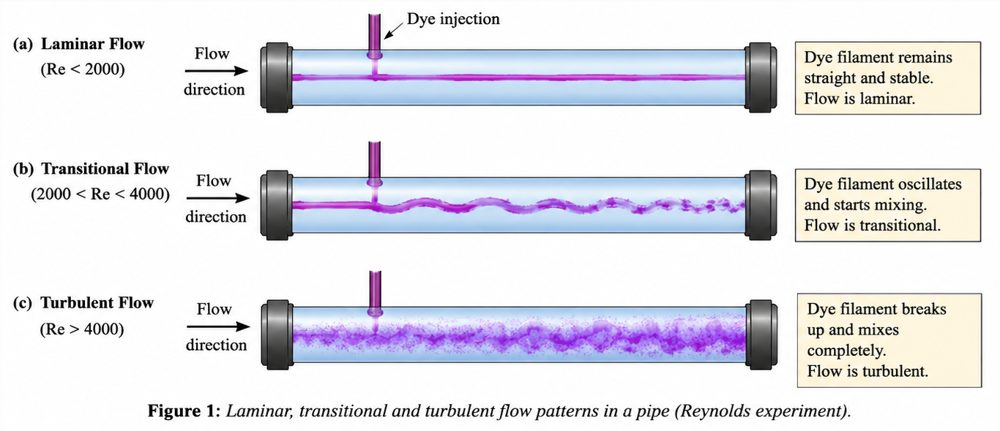
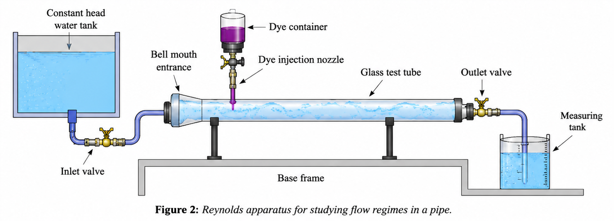

Reynold's Experiment
The Reynolds Experiment is one of the most fundamental experiments in fluid mechanics. It is performed to study the nature of fluid flow through a circular pipe and to determine the conditions under which the flow changes from laminar to turbulent. The experiment demonstrates the importance of the Reynolds number, a dimensionless parameter used to classify different flow regimes.
The experiment was first conducted by Osborne Reynolds in 1883. By injecting a coloured dye into flowing water inside a transparent tube, he observed that the behaviour of the dye filament changed with the flow velocity. This simple observation led to the identification of different flow regimes and established the Reynolds number as an important criterion in fluid mechanics.
When a fluid flows through a pipe, two types of forces act on it:
- Viscous forces, which resist relative motion between fluid layers and tend to maintain orderly flow.
- Inertial forces, which arise due to the momentum of the moving fluid and tend to promote mixing and fluctuations.
The relative dominance of these forces determines whether the flow remains smooth or becomes chaotic.
Depending upon the flow conditions, fluid motion can be classified into three regimes:
Laminar Flow
In laminar flow, fluid particles move in smooth and parallel layers with very little mixing between adjacent layers. The motion is highly ordered and predictable.
During the experiment, the dye filament appears as a thin, straight line throughout the pipe.
Generally,
indicates laminar flow.
Transitional Flow
As the velocity increases, disturbances begin to develop in the fluid. The dye filament starts oscillating and partially diffuses into the surrounding water.
The flow becomes unstable and alternates between laminar and turbulent behaviour.
Typically,
represents transitional flow.
Turbulent Flow
At high velocities, inertial forces dominate over viscous forces. Fluid particles move randomly and continuously mix with each other.
The dye filament rapidly disperses throughout the flow and loses its identity.
Generally,
indicates turbulent flow.
Everyday Intuition
The difference between laminar and turbulent flow can be observed in everyday life.
- Honey flowing slowly from a spoon forms smooth layers, resembling laminar flow.
- Smoke rising from an incense stick initially moves in a straight path but becomes irregular after some distance, demonstrating transition to turbulence.
- Water flowing gently from a tap appears smooth, whereas a fully opened tap produces a highly disturbed and turbulent stream.
These examples show that increasing velocity causes the flow to change from orderly motion to random motion.
Experimental Relevance
The Reynolds experiment provides a visual demonstration of flow behaviour using dye injection.
At low discharge, the dye remains as a straight line, indicating laminar flow.
As the discharge is increased gradually, the dye filament starts wavering and partially spreads, indicating transitional flow.
Further increase in discharge causes complete mixing of the dye with water, indicating turbulent flow.
Thus, the experiment enables the critical Reynolds number corresponding to the transition of flow to be determined experimentally.

Mathematical Formulation
The Reynolds number is defined as
where
- = Reynolds number,
- = mean velocity of flow (m/s),
- = internal diameter of the pipe (m),
- = kinematic viscosity of the fluid (m/s).
The Reynolds number represents the ratio of inertial forces to viscous forces.
Mean Velocity
The average velocity through the pipe is
where
- = discharge through the pipe (m/s),
- = cross-sectional area of the pipe (m).
For a circular pipe,
Therefore,
Substituting into the Reynolds number equation,
This equation is used to calculate the Reynolds number corresponding to each discharge.
Apparatus-Specific Application
The Reynolds apparatus consists of
- a constant head water supply,
- a transparent glass tube,
- a dye injection arrangement,
- a regulating valve,
- and a collecting tank for discharge measurement.

The regulating valve controls the flow rate through the pipe. A coloured dye is introduced into the centre of the flow.
The behaviour of the dye filament indicates the nature of flow:
- Straight filament → Laminar flow.
- Slight oscillation → Transitional flow.
- Complete dispersion → Turbulent flow.
The discharge corresponding to each condition is measured experimentally and used to calculate the Reynolds number.
Engineering Significance
The concept of Reynolds number is extensively used in engineering analysis and design.
Some important applications include:
- Design of water supply and pipeline systems.
- Analysis of flow through irrigation networks.
- Design of hydraulic machines and turbines.
- Flow measurement devices and pipe fittings.
- Prediction of pressure losses in pipelines.
- Modelling of rivers and open channels.
- Heat exchangers and chemical process equipment.
- Aerodynamics and fluid transport systems.
Significance of the Experiment
The Reynolds Experiment helps to
- visualize different types of fluid flow,
- determine the critical Reynolds number experimentally,
- understand the effect of velocity on flow behaviour,
- study the interaction between inertial and viscous forces,
- classify flow into laminar, transitional and turbulent regimes, and
- appreciate the importance of Reynolds number in hydraulic and engineering applications.
The experiment provides a direct demonstration of one of the most important concepts in fluid mechanics and forms the basis for the analysis and design of almost all fluid flow systems.